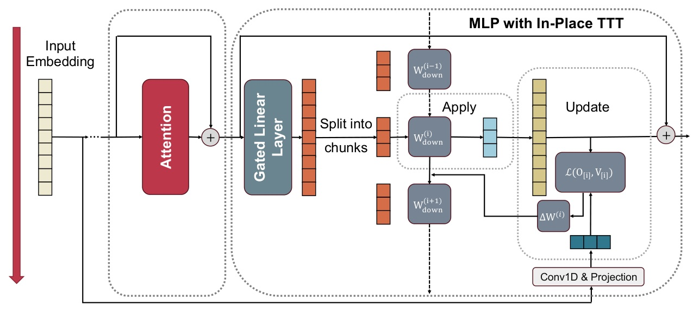
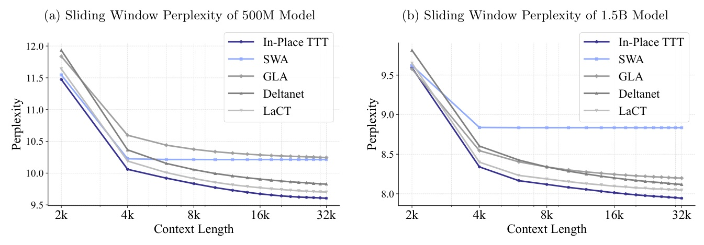
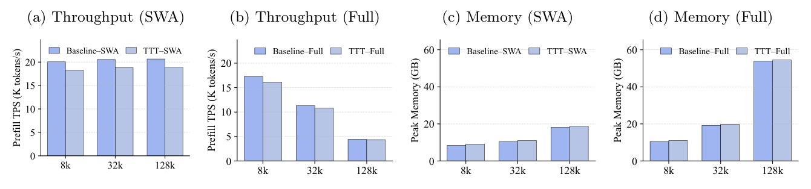

把 MLP 的 Wdown 變成推論時可更新的 fast weights，讓既有 LLM 不改架構也能做 test-time adaptation。
Test-Time Training 不一定要重做架構；也可以把既有 MLP 投影矩陣原地變成動態記憶。
In-Place TTT 的關鍵不是「多一個 memory layer」，而是讓 pretrained LLM 內部最大、最常見的 MLP matrix 同時承擔 slow knowledge 與 fast context。

這篇最重要的機制命題：fast weights 應該儲存「對未來 token 有用」的資訊，而不是複製現在。
在 induction-head setting 下，LM-aligned target 期望提高 correct next-token logit；reconstruction target 對 correct token 只有 negligible effect。
| RULER length | Baseline | In-Place TTT | Gain |
|---|---|---|---|
| 64k | 74.3 | 78.7 | +4.4 |
| 128k | 74.8 | 77.0 | +2.2 |
| 256k extrap. | 41.7 | 43.9 | +2.2 |
同一 continual training curriculum；變因是是否加入 In-Place TTT。
| Base model | Context | Baseline | In-Place TTT | Gain |
|---|---|---|---|---|
| LLaMA-3.1-8B | 64k | 81.6 | 83.7 | +2.1 |
| Qwen3-14B | 64k | 67.9 | 70.6 | +2.7 |
| Qwen3-14B | 64k+YaRN | 81.3 | 82.5 | +1.2 |

| Architecture | Metric | Baseline | I.P. TTT | Gain |
|---|---|---|---|---|
| Full Attention | RULER-16k | 6.58 | 19.99 | +13.41 |
| SWA | RULER-8k | 9.91 | 26.80 | +16.89 |
| Full Attention | RULER-8k | 38.09 | 43.82 | +5.73 |
4B models were trained for 120B tokens with 8k context length; common-sense metrics mostly also improve, but the clearest signal is long-context RULER.
Figure 3 clean=false（裁圖 manifest 有 body_x1 issue），本頁只引用 caption 與文字描述，不硬放圖。

“In-Place TTT treats the final projection matrix of the ubiquitous MLP blocks as its adaptable fast weights, enabling a ‘drop-in’ enhancement for LLMs without costly retraining from scratch.”
In-Place TTT 把常見 MLP block 的最後投影矩陣當作可調 fast weights，因此可作為不需從頭訓練的 drop-in 增強。Abstract p.1
“The LM-Aligned target is guaranteed in expectation to increase the logit of the correct next token ... In contrast, the reconstruction target provides no such predictive benefit.”
LM-aligned target 在期望上會提高正確 next token 的 logit；相反地，reconstruction target 沒有這種預測收益。Theorem 1 discussion, §3.3 p.6
“This design choice makes our method not only fast and scalable but also mathematically equivalent to a strictly causal sequential process, thanks to careful boundary and padding management.”
透過 boundary 與 padding 管理，方法既快速可擴展，也在數學上等價於嚴格 causal 的 sequential process。§3.4 p.7
In-Place TTT 把 LLM 的 MLP 從靜態 feed-forward 模組，重新詮釋成可在推論時吸收 context 的高容量 fast memory。